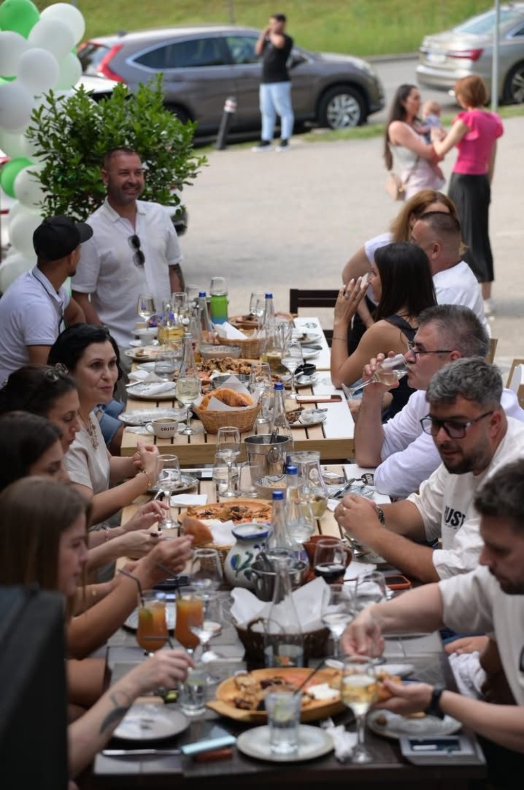
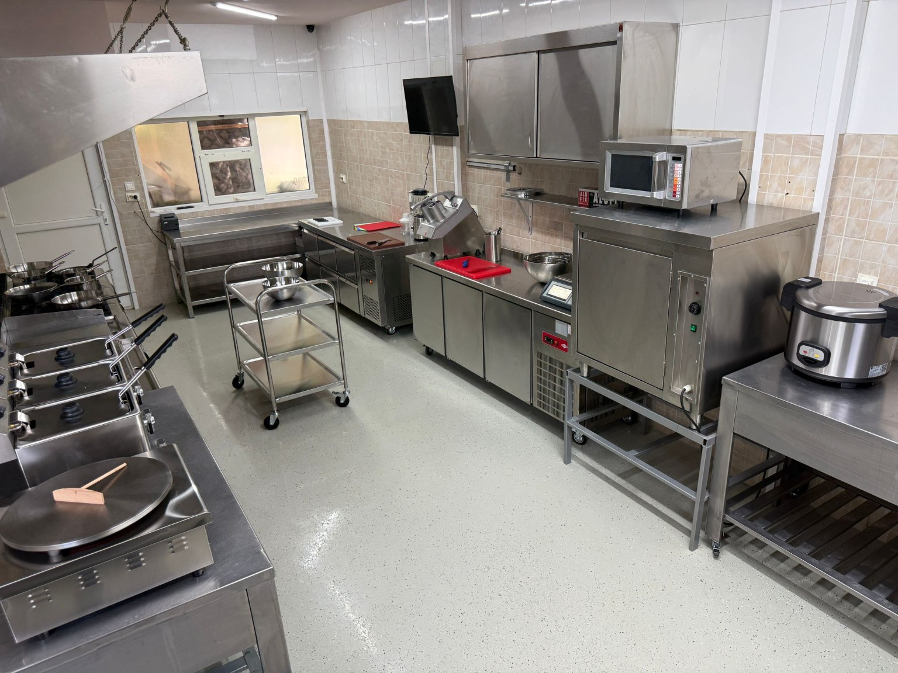
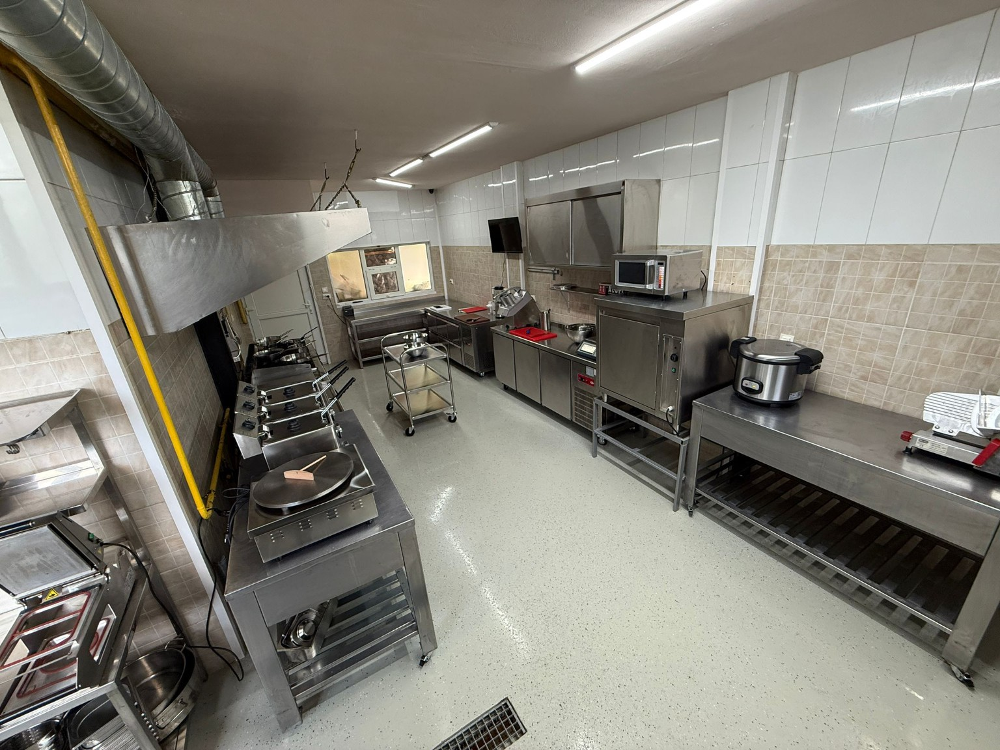
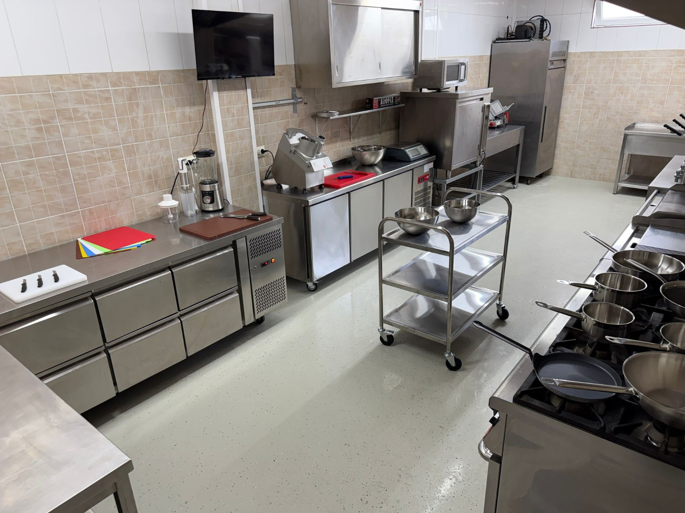
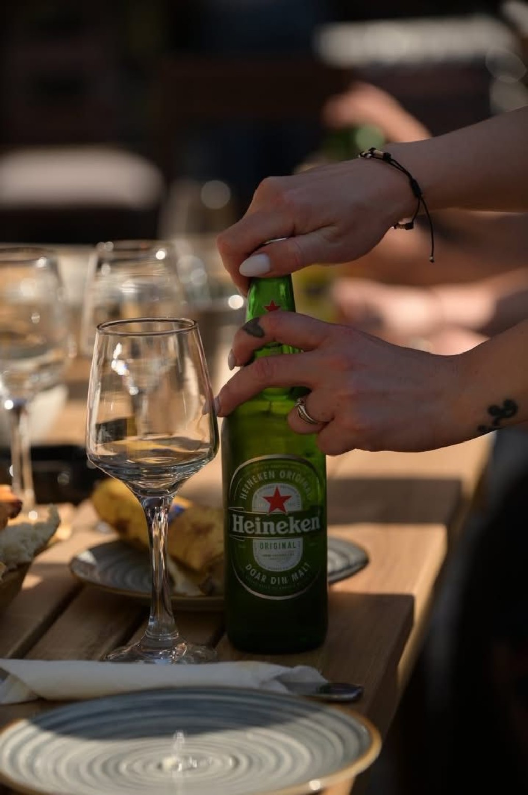

Restaurant tradițional în Craiova
Masa Boierului
Ospăț ca pe vremuri!
Bucate românești gătite cu poftă, platouri pentru familie și prieteni, grătar, ciorbe, terasă și atmosferă boierească.
Gust autentic
Ca la mesele de altădată
La Masa Boierului găsești preparate românești consistente: ciorbe drese cum trebuie, mâncăruri gătite, grătar încins și platouri mari pentru mese cu prietenii.
Despre noi
Bun venit la Masa Boierului!
Sunt Mitrache Robert, fondatorul restaurantului, iar povestea acestui loc începe cu o pasiune pentru gastronomie și ospitalitate, construită în peste 10 ani de experiență în domeniul HoReCa.
Înainte de a deschide Masa Boierului, am administrat o pizzerie-restaurant, unde am învățat cât de importante sunt calitatea preparatelor, respectul față de client și atenția la fiecare detaliu. Toată această experiență m-a motivat să creez un restaurant în care lucrurile să fie făcute așa cum mi-am dorit întotdeauna: cu profesionalism, seriozitate și implicare.
Masa Boierului s-a născut din dorința de a oferi mai mult decât un loc unde se servește masa. Am vrut să construim un restaurant în care oamenii să revină cu drag, atât pentru preparatele gustoase, cât și pentru atmosfera caldă și serviciile de calitate.
Noua noastră locație este mai spațioasă și ne permite să organizăm o gamă variată de evenimente, de la aniversări, botezuri și cununii, până la petreceri private și evenimente corporate. Indiferent de ocazie, ne dorim ca fiecare invitat să se simtă bine primit și să plece cu o experiență frumoasă.
Cred că succesul unui restaurant nu se măsoară doar prin mâncarea pe care o servește, ci și prin încrederea pe care o câștigă în timp. De aceea, alături de echipa mea, investim permanent în calitate, organizare și servicii, pentru ca fiecare vizită la Masa Boierului să fie una memorabilă.
Vă mulțumim pentru încredere și vă așteptăm cu drag să ne treceți pragul!
Mitrache RobertFondator - Masa Boierului

Rezervări
Rezervă o masă
Completează formularul, iar echipa Masa Boierului te contactează telefonic pentru confirmare.
În spatele gustului
Bucătărie modernă, curată și pregătită pentru volum
Pozele cu bucătăria arată aparatură profesională, spații curate și organizare bună pentru servire rapidă.
- Echipamente profesionale
- Flux curat de lucru
- Preparare zilnică




Contact
Rezervă o masăRestaurant Masa Boierului
Craiova, România
Telefon evenimente și rezervări: 0753 133 321
Comenzi & rezervări
Poți suna direct sau poți trimite formularul de rezervare online.
Sună acum Deschide harta